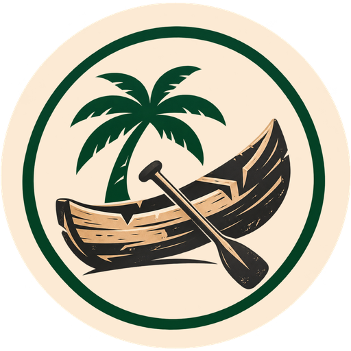

Natureza Viva
Frutíferas amadurecem e secam conforme a estação. Animais diurnos e noturnos habitam biomas específicos — de jabutis e teiús a garças, corujas e gatos-do-mato.
SOBREVIVÊNCIA • EXPLORAÇÃO • TRAVESSIA

Ilhas, Estações e Travessias
Você acorda em uma ilha desconhecida com apenas o que a natureza oferece. Aprenda a ler o tempo, acenda sua primeira fogueira, forje ferramentas mais resistentes e prepare sua canoa para encarar o mar aberto.
A EXPERIÊNCIA
Em Perdido, você não segue setas mágicas no céu. Você aprende a reconhecer frutas maduras na época certa, rios que dão passagem a pé, rastros de animais e o momento certo de lançar a canoa na água.
Frutíferas amadurecem e secam conforme a estação. Animais diurnos e noturnos habitam biomas específicos — de jabutis e teiús a garças, corujas e gatos-do-mato.
Monte fogueiras para espantar o frio da noite, assar alimentos e produzir carvão. Molde fornos de argila na beira dos rios para fundir ferro, prata, ouro e platina.
A canoa abre caminho para ilhotas distantes, mas o casco se desgasta com o uso e as tempestades. Leve madeira e corda para reparos — ou enfrente o naufrágio.
CORPO E OFÍCIO
Recupera-se quando você está bem alimentado, descansado e protegido do frio.
Colha pitangas, siriguelas e bananas — ou asse na brasa para sustentar muito mais.
Correr, remar, atravessar rios e golpear rochas cansam. Sem fôlego, seu ritmo cai.
Chuvas, trovoadas e noites frias drenam seu vigor. Fique perto do fogo para se aquecer.
ESCOLHA SEU CAMINHO
Cada personagem começa com características próprias que influenciam fôlego, fome e resistência ao clima.
Anda longe pela mata e suporta bem o tempo ruim sem perder o ritmo.
À vontade na água e no trabalho pesado, mas sente fome mais cedo.
Sabe racionar comida e aproveita melhor cada alimento, mas cansa rápido na água.
Robusto e resistente a tempestades, mas exige mais alimento durante a jornada.
O CALENDÁRIO DA COSTA
Água abundante, lagoas cheias e primeira safra de pitanga e siriguela.
O céu abre, o chão seca aos poucos e a mata mantém suas folhas verdes.
O calor aperta, as árvores perdem folhas e a resistência cai mais depressa.
Relâmpagos cortam o horizonte, flores brotam nos galhos nus e o mar fica perigoso.
EXPLORAÇÃO COMPARTILHADA
Todo mundo gerado em Perdido possui um código único. Você pode criar uma ilha aleatória ou digitar um código conhecido para explorar exatamente os mesmos rios, trilhas, cavernas e ilhotas que outro jogador.
V2-E-1808-1997